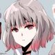
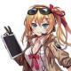
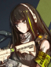
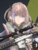
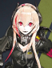
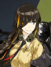

Factions
The world of Girls Frontline contains many different factions which all look very different and contain various interesting and often mysterious characters.
| Griffin & Kryuger | A Private military company founded by Kryuger an ex-army veteran of World War 3, this faction operates as the protagonist faction which the player follows throughout the game. Staffed by human officers and former civilian A-DOLLs converted to Tactical-DOLLs specialized in firearms, G&K was employed by the New Soviet Union to bring back order and contain the threat of Sangvis Ferri. |
|---|---|
| Sangvis Ferri | A former company which spearheaded the developement and production of DOLLs, the human staff of Sangvis Ferri was overthrown by their very creations during the Butterfly Incident. Now controlled by an experimental AI only currently known as the "Mastermind", Sangvis Ferri has been rampaging around the Southern portion of Eastern Europe carving a bloody path with their automated armies and powerful advanced T-DOLLs called the Ringleaders. |
| KCCO | The Special Forces Branch of the New Soviet Union, KCCO is led by General Carter and Commander Yegor. Using powerful armored military T-DOLLs, heavy vehicles, and the best weaponry the nation has to offer KCCO serves as a mighty vanguard against national threats and a bulwark against the ever present mutants known as ELIDs which stalk the uninhabitable regions of the planet. Despite their position as a military arm of their country General Carter and Commander Yegor appear to have some sort of ulterior motive involving the Sangvis Ferri conflict. |
| Paradeus | Known as the mysterious "White Faction", Paradeus is a secretive organization operating from the shadows and have recently made themselves known as they conduct operations throughout Eastern Europe. Using advanced technology beyond that of the current world's superpowers, Paradeus has been been inserting themselves into various positions of power throughout different nations and have manipulated certain events that happened throughout the story. With the mysterious Nytos, Paradeus has risen to become a great threat to the world as their motives remains a mystery. |
Main Characters
The story takes the point of view of multiple characters as the player witnesses events from the perspective of both the Commander and main cast of T-DOLLs that are often in the field or going on missions.
The Commander/ Commander Gentiane
The player character of the game, the commander is very resourceful and a masterful strategist and tactician.
The Commander is always described as being extremely kind to DOLLs and treats them as equals. The Commander is customizable down to what gender they are in game
however the Manga(Comic) features an original character named Gentiane who serves as the stand in for the player in the Manga's story. She's similar to the player's
personality but also has the added characterization of being very overworked and rather grouchy but is extremely competant in her job.
{kind=link}
Kalina

Kalina is the Commander's assistant, secretary, and treasurer who helps keep their sector in order. Despite her rather trendy and fashionable appearence she is quite a
hard worker when it comes to desk work and handling the budgeting of their base. She's often the one tasked with paperwork and handling the spending which often leaves
her working for hours on end much to her annoyance. Kalina is also quite the merchant as she functions as the ingame store where you buy various things in-game such as
resource bundles and rewards for events while also being canonically being shown to sell recreational items such as clothing as a way to make more money on the side.
{kind=link}
M4A1

M4A1 is the squad leader of team "Anti-Rain", an elite team of custom T-DOLLs created by the leading mind behind DOLL technology itself Persica. M4A1 in particular is
a massive advancement in DOLL technology as her digimind (AI/brain) is the closest thing to a real human brain giving her the capabilities to learn and grow much faster than
normal DOLLs and can act independently of her own volition from human orders. M4A1 is a bit of a "shrinking violet", in that she doesn't quite have as much confidence in herself
as she really should, is rather quiet, and indecisive despite her role as squad leader. As the story goes she becomes stronger emotionaly and mentaly as she must deal with
the realities of war and the loss of those who were dear to her.
{kind=link}
STAR-15

Marksman of AR-Team, STAR is the most standoffish of the group. STAR has a temper and sharp mouth often voicing her disdain of others that she is annoyed with while also being
very direct and at times insulting with her words. Often having issues at times M4A1's inability to lead and lack of self-confidence, STAR questions the decision Persica made to
make M4A1 the squad leader. Despite this she still holds concern for the rest of the team and is willing sacrifice herself if it means keeping the others safe. She also has
a sort of "annoying sibling" relationship with SOP who annoys her often through pranks or her general behavior.
{kind=link}
M4 SOPMOD II

M4 SOPMOD II or "SOP" for short is the youngest yet possibly the most dangerous member of the group. SOP is extremely bubbly and energetic often likened to what can only be described
as a loyal dog that wants the affection of those closest to her. Very cheery and quite the troublemaker she often finds herself butting heads the most with STAR who is often annoyed
with SOP's antics. SOP however is extremely bloodthirsty and is quite the battle maniac who finds herself charging head first into enemies for the chance to tear them apart.
SOP can be sadistic to those she considers enemies and will even rip various body parts off the wreckages of her foes to use as modifications for herself or as trophies and "artwork".
On top of her combat prowess and bloodthirst SOP is also adept in engineering as she builds various gadgets and random objects she considers "art" and modifies her own body using the
various salvage she gets from her fallen enemies.
{kind=link}
M16

The oldest member of the squad, M16 takes an older sister and mentor role to M4A1 where she comforts and gives advice to her when M4 is unsure of things. Despite being an older model
M16 can easily keep up with the other members due to her experience as a former Special Operations T-DOLL prior to the events of the story. M16 is extremely protective of her "sisters"
especially M4A1 and step in without hesitation to help them whenever their in trouble. M16 despite her appearence acts much older than one would expect due to her mental age being like
that of a seasoned military veteran after all the combat simulations she ran during her time in Special Forces. Fairly tomboyish and a bit of an alcoholic she loves to spend time in
bars drinking liquor such as whisky and is even depicted getting blackout drunk numerous times during expedition events. M16 also appears to have a turbulent history with Squad 404's
HK416 resulting in a hostile rivalry between the two.
{kind=link}